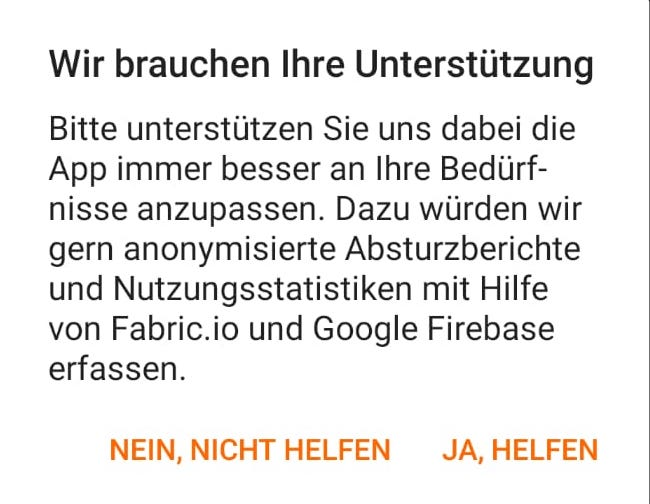

Try to navigate through the presentation with your voice.
Recognized:

App redesign
Volksbank mobile banking
Problems of the current App
Design Principels
Based on the knowledge from the user test,
we created statements, which we used as a guideline
during the course of the project and which we ultimately realised in our product.
1. New structure
-Reorganizing the important menu items
-Adding new functions to meet user requirements
-Implementing the user test onto the new hierarchy simplify the menu navigation
2. New style
-setting apart important items form more unimportant
-colour scheme consiting of the typical Volksbank colors: blue and orange.
3. New ui components
-We tried to fuse aesthetics and meaningful components
to accomplish a clean atmosphere for the product look and feel.
-Clickable elements are displayed in white boxes, with a slight shadow.
This creates a three-dimensionality, which tempts the user to "push" the boxes in.